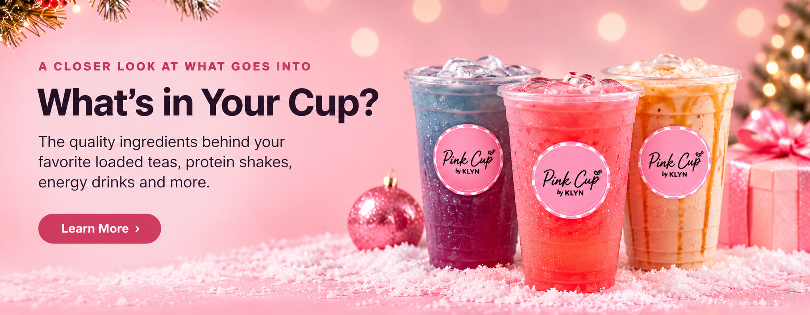

What's in a Loaded Tea?
Loaded teas are delicious, fun and refreshing iced beverages, 'loaded' with vitamins, minerals and electrolytes. Every loaded tea at Pink Cup includes our Nutritional Boost Blend and Raspberry Tea, providing approximately 225 mg caffeine in total. (Lite or no caffeine options are available.)
We use all organic flavorings with zero calories, sweetened with stevia. That means, most of our teas have zero calories, zero carbs and zero sugar. Of course, toppings and custom add-ins can change calorie, carbohydrate, and sugar counts. Ask a team member for specifics.
It's all about the ingredients.
Tap a card to learn more about our boosts and add-ins.
Nutrition BoostCaffeine • B vitamins • Electrolytes+
Our energy blend combines caffeine from green coffee bean and green tea extracts with B vitamins, taurine, carnitine, and electrolytes.
Good to know: Contains 180mg caffeine.
Little BoostCaffeine-free Hydration Blend+
A caffeine-free blend featuring electrolytes and vitamins, including C, D3, B6, and B12. Used in our kid's teas and as the boost for our no caffeine loaded tea options.
Good to know:Not recommended for children under 2 years of age.
Collagen10g Hydrolyzed Collagen Peptides support healthy skin, hair & nails+
Unflavored hydrolyzed collagen peptides blend into teas and shakes without changing the flavor much. Includes hyaluronic acid and MSM.
Good to know: While Collagen is a protein, but it is not a complete protein.
Protein20g Hydrolyzed Whey Isolate adds an extra boost of protein+
Unflavored whey protein isolate can be mixed into any of our drinks to add a daily boost of protein.
Good to know: Contains milk. 20g protein per scoop.
Wellness BlendImmunity Boosting Vitamins C, D3 & Zinc+
Wellness and immunity support in our carefully curated blend of vitamins, minerals, and electrolytes.
Good to know: Supports immune function and overall wellness.
Hydration BlendTotal Hydration Support Blend+
An unflavored electrolyte blend with sodium, potassium, and magnesium bisglycinate, calcium and Vitamins C, B1, B2, B5, B6, B12, Niacin and Taurine.
Good to know:Can be added to any drink to boost hydration.
Hydro StrengthMuscle Suporting Creatine with Electrolytes+
An unflavored creatine add-in with electrolytes. Creatine is commonly used to support performance during repeated high-intensity exercise.
Good to know: 6.8g creatine per serving.
Deep BurnMetabolism Support Blend+
Our specialty botanical blend containing carnitine, CLA, chromium, inositol, and botanical extracts. Provides support for improved metabolism.
Good to know: We don't promise weight-loss or any other medical outcomes.
Find your favorite sip
Explore our menu and make your drink your own.
Explore the menu ↗